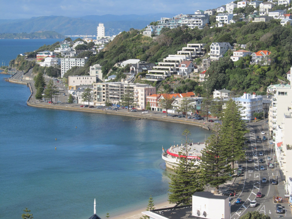

Wellingtons Oriental Bay!
Wellington Tourist Location
Wellington's Beautiful Waterfront!
Oriental Bay is one of Wellington's most popular beaches and is
located just a short distance from the city centre. The beach is
surrounded by beautiful waterfront scenery and provides views across
Wellington Harbour, making it a popular place for both locals and
visitors.
Visitors can relax on the sandy beach, swim in the harbour, walk
along the waterfront, or enjoy the surrounding parks and cafes.
Oriental Bay is also a great location for photography, particularly
around sunrise and sunset when the harbour and surrounding hills
create scenic views.
The beach is easily accessible from central Wellington by walking,
cycling, driving, or public transport. Since there is no admission
fee, Oriental Bay is a good option for visitors looking for a
relaxing and affordable activity while exploring Wellington.
Facts:
- Located close to Wellington city centre
- Popular sandy beach
- Overlooks Wellington Harbour
- Popular for swimming and relaxing
- Walking and cycling paths nearby
- Surrounded by cafes and restaurants
- Great location for photography
Costs:
- Entry to Oriental Bay: Free
- Swimming and beach access: Free
- Estimated food costs: $10-$30 per person
- Estimated public transport costs: $2-$10
- Estimated parking costs: $0-$10
- Estimated total visit cost: $12-$50 per person